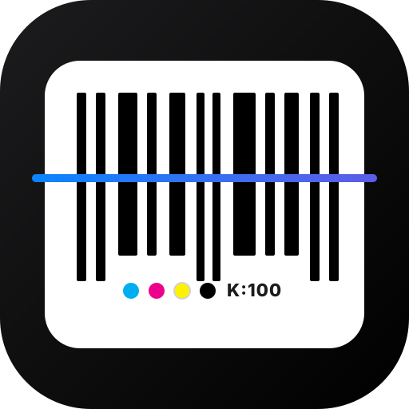

Vektörel Barkod Stüdyosu
GS1 Ambalaj & Baskı Prepress Motoru
CMYK 0 / 0 / 0 / 100 (Saf Siyah)
GS1 Quiet Zone Korumalı
Masa: Koyu / Açık
Canlı Vektör Masası
|
GS1 EAN-13 Perakende Standardı
100%
150%
200%
260%
37.29 mm
25.93 mm
QZ
QZ
SVG panoya kopyalandı!